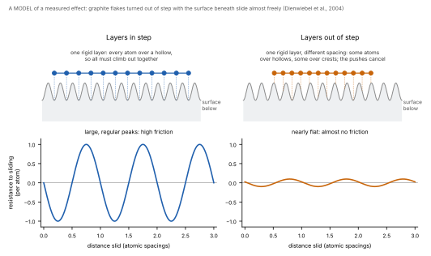

Library › The Unified Framework for the Graviton Pressure Theory
Natural Force
Every Force and Its Carrier
About This Paper
Classical physics broke the experience of interaction into labelled categories: weight, tension, compression, friction, the normal force, the spring force, shear, buoyancy, inertia and reaction. They were named separately not because they come from separate causes, but because the framework that named them had no way to unify them. Each was treated as a phenomenon with its own rules, applied as needed. Even within Newton’s mechanics, the normal force is a placeholder, friction an empirical rule, inertia a mystery labelled as a property, and action and reaction a rule without a mechanism. General Relativity recast gravity as geometry and left the rest as it was.
This paper gives each force its mechanism in the medium: what touches what, what is exchanged, and what the measurements say. It then treats the structure of solids as field dynamics: how a material springs back, yields, hardens and breaks, and what each stage means for the phase relations that hold it together. It ends with phase itself, as the gate that decides what passes through structured matter. In each section GPT’s account comes first and the measurements that check it follow.
This is the second edition; what changed from the first is listed at the end. Claims are marked by their status, as the key shows.
27.1 One Medium, Many Carriers
All classical forces are expressions of the interaction between external graviton field pressure and the internal coherence structure of matter. Every force must name its carrier, [Argued] and not every force is a push (Part 7).1 A force that draws bodies together is acceptable once its carrier is named; a push that names no carrier is a placeholder too. The external medium, and the internal structure of matter that the medium has organised, are between them the source of every everyday force.
| Force | Carrier in GPT | Measured law | Where |
|---|---|---|---|
| Weight | the medium’s inflow, delivering momentum to every particle; a scale reads the rate at which it is passed on | \(W=mg\) | Parts 6, 7, 11 |
| Normal force | delivered momentum passed through the bonds of the support, with exclusion where the surfaces meet | equals the load passed on | Section 27.2; Part 21 |
| Tension | a line of bonds, each lengthened slightly and holding; fails at a threshold | Hooke’s law; speed of sound | Section 27.5 |
| Compression, spring, shear | bonds displaced and re-settling; the phase relation of the lattice held | Hooke’s law; moduli | Section 27.7 |
| Friction | the two surfaces’ patterns locking where they are in step | \(F=\mu N\) | Section 27.6 |
| Buoyancy | the fluid’s own load, passed down through it | Archimedes’ principle | Section 27.9 |
| Centripetal force | not a separate force: whichever carrier turns the path | \(mv^2/r\) | Part 26 |
| Inertia | the carved path: a moving body’s front-to-back imbalance in its exchange with the medium | \(F=ma\) | Section 27.4 |
| Reaction | pressure acting equally both ways at a contact; each body carried by the other’s inflow | equal and opposite | Section 27.3 |
Table 27.1 lists each everyday force with its carrier, the law it obeys, and where it is worked out.
27.2 The Normal Force
Named alone, the normal force is a placeholder. Consider a person on a scale. The medium’s pressure passes through the person into the Earth; the person’s structure resists it; the surface beneath provides structural resistance; the scale measures the resistance, not a pull. The carrier of that resistance is the structure itself. [Hypothesis] The medium delivers momentum to every particle of the person in proportion to its mass (Part 14). Each layer of the body passes that momentum to the layer beneath, through its bonds, and at the soles of the feet the patterns of skin and scale push each other apart. The scale passes it to the floor, and the floor to the Earth. A scale reads the rate at which momentum arrives through it (Part 6).4
Every part of this is measured [Argued] (Part 21):5 the bonds shorten under the load, by nanometres in a table under a book; the load takes time to pass, travelling at the speed of sound in the material; and it follows paths set by structure, as the force chains in a pile of grains show. The reading does not depend on the area of contact: a scale reads the same whether a person stands on one foot or two.
27.3 Action and Reaction
Stated alone, action and reaction is a tautology without mechanism. GPT gives it one, in two cases. [Hypothesis]
At a contact, two surfaces push each other apart through the pressure where their patterns meet. Pressure acts equally in every direction, so the push on each side is the same.
In gravity, each body is carried by the other’s inflow, in proportion to its own mass: the Earth delivers \(m\cdot GM/r^2\) to a body of mass \(m\), and the body delivers \(M\cdot Gm/r^2\) to the Earth. The two are equal and opposite (Part 7).
Measurement agrees in both cases [Argued]: forces at contacts balance in every test, and the Earth and Moon orbit their common centre, the Earth swinging round it once a month.
27.4 Inertia and Acceleration
Inertia is a matter of graviton field saturation and directional memory, in three parts:
Field imprint: when a body moves, its structure establishes a dominant directional resonance with the field;
directional preference: any change of direction must overcome that established resonance, and this is perceived as inertia;
mass connection: mass is the degree of saturation and phase stability; higher saturation needs more pressure to reconfigure, so more inertia.
Acceleration is a rewriting [Argued] that travels through the body. Acceleration is a restructuring of internal corridor alignment: sudden acceleration causes field stress; gradual pressure changes allow smoother reconfiguration. That is measured. A push applied to one face of a body does not reach the far face at once: it travels through at the speed of sound in the material, about 5,900 metres a second in steel, as each layer of bonds is compressed and passes the change on. Applied slowly, the push reaches every layer before the next increment arrives, and the body accelerates as a whole with little internal stress. Applied suddenly, as in an impact, the change is concentrated in a front that runs through the body, and the stress there can far exceed what the same final force would cause if applied gradually. This is why a blow breaks what a steady load of the same size does not. A body’s mass is the same however quickly it is pushed; only the stress inside it depends on how quickly.
27.5 Tension
Tension is a bidirectional stabilising pressure: corridors are established along the length of a rope or beam; a load at its ends challenges their alignment; the structure responds to restore it; and when the applied gradient exceeds the material’s coherence threshold, the corridors collapse and it breaks. The threshold correlates directly to tensile strength.
Tension travels at the speed of sound, [Argued] not instantly. A Slinky held from its top and released shows it: its bottom stays where it was, hanging in mid-air, until the change in tension travelling down the spring reaches it.7 Why a stretched bond resists lengthening, [Open] in terms of what touches what in the medium, is owed. GPT’s programme (Part 7) reads every force that seems to draw things together as a deficit of pressure relative to the surroundings, as the atmosphere presses together the two halves of an evacuated sphere; for the bond, that account is not yet worked out.
27.6 Friction
Friction is the medium’s resistance at the junction of two structures. Each body in contact possesses its own internal graviton corridor alignment. When one body attempts to move across another, the interface fields attempt to remain synchronised. The energy lost to friction becomes heat, a manifestation of failed graviton alignment at field junctions.

This is measured. [Argued] In 2004 Dienwiebel and colleagues slid a tiny flake of graphite across a graphite surface. When the flake’s lattice was turned into step with the surface beneath, the two locked and resisted sliding; turned out of step, the flake slid with almost no friction at all, a state now called superlubricity.8 Synchronisation decides friction: in step, the surfaces hold; out of step, they glide.
Ordinary surfaces touch only at the tips [Argued] of their roughness. Friction is proportional to the load pressing two surfaces together and does not depend on their apparent area (Amontons, 1699), because the real area of contact, the tips of the roughness pressed together, grows in proportion to the load.9 Each tip is a small interface where the two surfaces’ patterns meet; [Hypothesis] where they come into step they lock, and sliding breaks and re-forms these locked junctions. More load, more junctions, more friction.
The energy friction takes becomes heat. [Argued] In Part 20’s account, heat is energy delivered as disordered motion: the breaking of locked junctions sets the atoms near the surface jostling out of step, and the jostling spreads as knocks.10
27.7 Deformation as Field Dynamics
Deformation is the visible sign of field phase failure: a solid is held by the phase relations of its internal structure, and how it deforms is how those relations give way. Parts 20 and 21 give this a measured foundation.
27.7.1 Three regimes
27.7.2 Yield and the distortion ratio
Yield strength is the maximum differential pressure a structure can resist before realignment becomes energetically favoured over phase retention. The graviton coherence distortion ratio, the applied gradient over the structure’s coherence, measures how close a structure is to it: when the ratio exceeds unity, plastic deformation becomes irreversible.
The measured law has exactly this form. [Argued] Schmid found in 1924 that a single crystal begins to slip when the shear stress resolved onto one of its slip planes reaches a fixed critical value, whatever the direction of the load.11 The ratio of the resolved stress to that critical value is the distortion ratio, and slip begins where it reaches one. In GPT the critical value is the stress [Hypothesis] at which a dislocation can re-lock the next row more readily than the lattice can keep its present arrangement: realignment energetically favoured over phase retention.
27.7.3 Stress, strain and elasticity
Stress is momentum passed through the bonds. [Hypothesis] Stress is the incoming pressure gradient relative to the coherence resistance of the material, and strain is the degree of corridor reconfiguration. In the terms of Part 21, stress is the momentum passed through each area of a material each second, along its bonds, and strain is how far each bond has re-settled to pass it.
Elasticity is coherence memory: the more coherent the material’s field, the greater its tendency to restore its prior shape. Stiffness tracks the energy of the bonds. [Argued] Across the metals, the resistance to compression follows from how much energy the bonds hold and how quickly it changes as they are squeezed, one relation fitting them all.12 Diamond, with its bonds packed densely, is the stiffest solid known, with a bulk modulus of 443 gigapascals; lead’s is 46 (Part 24).13 In GPT the energy of the bonds is the energy of the medium [Hypothesis] organised into them, the second pressure of Part 20, and stiffness is how strongly that organisation returns.
27.7.4 Plasticity: hardening, brittleness and ductility
Three behaviours of plastic materials follow from how their order can reconfigure.
Brittleness: [Argued] high field coherence but low plastic adaptability causes immediate rupture. Diamond and ceramics, whose dislocations can barely move, cannot yield, and when loaded past their strength they break.
Ductility: [Argued] field networks that reconfigure gradually, rather than snapping. Metals such as copper, gold and aluminium have many planes along which dislocations move easily, and they stretch a long way before breaking: gold can be beaten into leaf a few hundred atoms thick.
Work hardening: [Argued] added disorder that blocks re-locking. Bending or hammering a metal multiplies its dislocations a millionfold or more; they run into each other, tangle and pin one another, so further yielding needs more force. Heating the metal lets the arrangement re-lock and the dislocations clear, annealing, and its softness returns (Part 21).
27.7.5 Fracture
Fracture is a phase singularity event: phase delays no longer propagate across it, and the lattice can no longer carry waves over it. A crack does block what passes through a structure. [Argued] Sound does not cross a crack; it is reflected from it, and this is how cracks in rails, aircraft and welds are found, by the echoes they return to an ultrasonic probe. Cracks concentrate the load. [Argued] In 1921 Griffith showed that solids break far below the strength of their bonds because tiny cracks concentrate the stress at their tips, and that a crack grows when the energy released by opening it exceeds the energy of the new surfaces it makes. His thin glass fibres, too fine to hold large cracks, were far stronger than thick glass.14 Fracture is bonds separating, along a path set by the flaws in the structure, and the severing of the lines that carried the load.
27.7.6 Tuning yield
By modulating field exposure directionally, one can tune yield behaviour, opening paths to dynamically hardening or softening materials in real time. Several such effects are measured. [Argued]
Current. Short, strong pulses of electric current through a metal make it yield at lower stress while they flow, the electroplastic effect, found by Troitskii in 1969.15
Sound. Ultrasound passed through a metal softens it while it is applied; Blaha and Langenecker found in 1955 that zinc crystals under ultrasound yielded at a much lower stress.16
Magnetic field. In some non-magnetic crystals, a steady magnetic field changes how readily dislocations move, the magnetoplastic effect.17
In GPT each delivers energy at the scale of the lattice [Hypothesis] to the places where its order is broken: moving charge knocking the dislocations, sound shaking them free of what pins them, and the field changing the circulation of the paired electrons at the defects that hold them. Each helps the row-by-row re-locking past an obstacle. How large each effect should be, [Open] from the medium, is owed.
27.8 Phase as a Gate
Phase is the logic of communication in structured matter: constructive overlap amplifies, destructive offset cancels, and phase can open, close or redirect what passes. That is the spatial phase of Part 19 [Hypothesis]: patterns overlapping in step reinforce, out of step cancel. It decides what passes through structured matter as well as how surfaces grip.
It is measured for every wave [Argued] that structured matter carries. A lattice reflects a wave only when its spacing matches the wave’s (Part 21); lattices built to the scale of light or sound forbid whole bands of wavelengths from passing. Built structures steer light around an object so that it passes as if nothing were there, a cloak first shown for microwaves in 2006;18 and structures that pass sound one way but not the other, acoustic diodes, have been built.19 Gates, diodes and cloaks exist, for light and sound. They do not exist for the total delivery of the medium to a body, which no structure changes (Part 15).
27.9 Buoyancy
A body in a fluid is pushed up by the weight of the fluid it displaces (Archimedes). Buoyancy is the fluid’s own load. [Hypothesis] Every layer of a fluid receives its weight from the medium, as every particle does, and passes it to the layer beneath, through the contacts between its molecules (Part 21). So the pressure in the fluid grows with depth, by \(\rho_{\text{fluid}}\,g\) for every metre. A submerged body is pressed harder on its underside than on its top by exactly the weight of fluid it has displaced.
27.10 Light Through Gradients
Light’s path bends because it crosses a gradient of the medium: graviton lensing is refraction, not curvature. The medium’s refractive index rises [Hypothesis] where its pressure is lowered, toward a mass, and light bends as it does through a lens of graded glass, by 1.75 arcseconds at the edge of the Sun (Part 23).20 The bending does not depend on the light’s energy: radio waves and visible light are bent alike.
27.11 Work
Work is force times the distance moved, \(W=\int F\,dx\). Elastic materials temporarily store coherence-phase compression, while friction dissipates graviton misalignment into local resonance decay. A stretched spring holds the energy in its displaced bonds and returns it; friction turns it into the disordered motion that is heat (Part 20). Where the energy of a held or lifted load is located is in Parts 6 and 11.
27.12 What Remains to Be Derived
Why a stretched bond resists lengthening, [Open] in terms of what touches what in the medium.
The coefficient of friction, [Open] from the locking of two surfaces’ patterns, including superlubricity.
The critical shear stress of a crystal [Open] from the re-locking of a row.
The stiffness of a bond [Open] from the exchanges that keep it up.
How large the effects on yielding should be, [Open] for current, sound and magnetic field, from the medium.
Conclusion
The forces of everyday experience have separate names but not separate causes. Every one has a carrier, and every carrier is the medium or a pattern of it: the inflow that delivers weight, the exclusion that makes contact hard, the bonds that pass a load from atom to atom, the swirl of a magnet. The normal force is delivered momentum passed through bonds; inertia is the carved path, and acceleration a rewriting of it that travels through the body at the speed of sound; tension is a corridor of bonds that fails at a threshold. Friction is the interface staying in step: surfaces in step lock, and out of step they glide. A solid is held by the phase relations of its structure, and deforms as they give way: elastically, recovering; plastically, re-locking one row at a time once a critical ratio is reached; and by fracture, where the lines that carried the load are severed. Brittle and ductile materials differ in how their order can reconfigure; current, sound and magnetic fields can tune it. Phase gates what structured matter passes. All of this is field dynamics, and the measurements bear it out.
Changes in the Second Edition
This list records what changed from the first edition and why. Changes to the argument alter what the paper claims or how it supports a claim; clarifications improve wording, sources or presentation and leave the argument as it was.
Changes to the argument
“All classical forces are expressions of graviton field pressure” is restated as “every force names its carrier, and every carrier is the medium or a pattern of it” (Part 7). The unified table becomes a catalogue of carriers, measured laws and cross-references.
Kept and given their mechanisms: the normal force (momentum passed through bonds), action and reaction, and the first edition’s account of inertia as imprint, directional preference and saturation (the carved path, the cost of rewriting it, and mass as confined circulation). Acceleration as a rewriting is kept, with sudden and gradual loading measured; inertia from “latency” is withdrawn.
Tension as corridors of bonds that fail at a threshold is kept; “near-instant” transmission is withdrawn.
Friction: the first edition’s account of the interface staying synchronised is confirmed (superlubricity); its sentence attributing resistance to misalignment is reversed.
Deformation: the three regimes as phase failure are kept and matched to measured mechanisms; yield and the distortion ratio are identified with Schmid’s law; stress as momentum passed through bonds; elasticity tracking bond energy; brittleness and ductility confirmed; work hardening corrected from added coherence to added disorder; fracture as severed load paths kept, with ultrasonic crack detection and Griffith’s cracks; “fracture is not a mechanical separation” withdrawn; “the lattice can no longer support graviton wave traversal” restated as the lattice no longer carrying waves across a crack, since no structure blocks the medium’s delivery (Part 15).
Tuning yield by field exposure is kept: the electroplastic, acoustoplastic and magnetoplastic effects are measured.
Phase as a gate is kept and identified with spatial phase, measured in engineered lattices, cloaks and acoustic diodes for light and sound; gravitational diodes, cloaking and holography are withdrawn, since no structure changes the total delivery.
Buoyancy from the medium’s pressure difference is withdrawn (about \(10^{-25}\) pascals per metre); buoyancy is the fluid’s own load.
Graviton lensing as refraction is kept; its formula, chromatic lensing and wake effects are withdrawn.
The area-based formulas for the scale, tension and friction, and the work formula \(\int\nabla P_g\,dx\), are withdrawn.
Removed, as too far from the core: inertial stabilisers and null zones; lensing navigation; field-resonant stabilisers; “field software”; the closing on music.
Clarifications
The title changes from Natural Force Re-imagined to Natural Force, and the subtitle from The Collapse of Force Categories Through Graviton Field Coherence to Every Force and Its Carrier.
Wording that described forces as pulls, such as a pull at a rope’s ends, is restated as loads and pressure differences, in line with Part 7.
The cross-references are renumbered.
One figure, one table, status marks and this list are added.